Conheça a equipe do hansen.ai
-
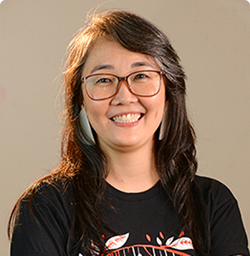
Patricia Takako Endo
Professora livre-docente da UPE e coordenadora do projeto
-
Danielle Moura
Professora Da Universidade De Pernambuco
-
Theo Lynn
Full Professor of Digital Business at Dublin City University - Business School
-
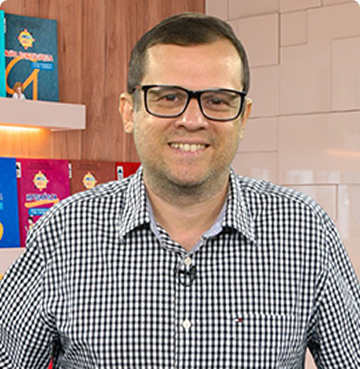
Hillson Gomes Vilar
Professor efetivo do Instituto Federal de Pernambuco
-
Raphael Augusto
Professor da Universidade de Pernambuco, Pesquisador do dotLab Brazil
-
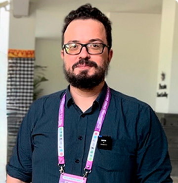
Cleber Matos de Morais
Professor da Universidade Federal da Paraíba
-
Élisson da Silva Rocha
Professor da Universidade de Pernambuco, Pesquisador do dotlab Brazil e Doutorando da UPE
-
Kayo Henrique
Pesquisador do dotlab Brazil, Professor do Centro Universitário Unifavip Wyden
-
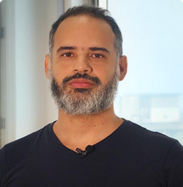
Bernardo Queiroz
Professor da Universidade Anhembi Morumbi (SP), Divulgador Científico do Projeto hansen.ai
-
Sebastião Rogério
Pesquisador do dotlab Brazil
-
Anna Beatriz Silva
Mestranda em Engenharia da Computação (PPGEC) e Pesquisadora DotLab Brazil
-
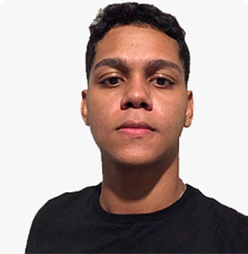
Anthony Militão
Pesquisador do dotLAB Brazil - Bolsista de Iniciação ao Extensionismo do CNPq
-
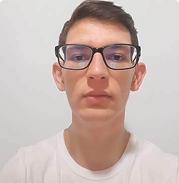
Gabriel Ferreira Masson
Mestrando em Engenharia da Computação (PPGEC) e Pesquisador do dotLAB Brazil
-
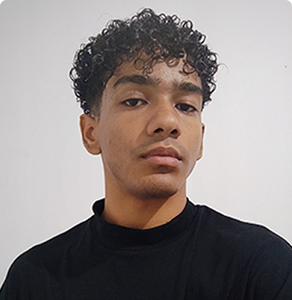
Italan Alex Santos
Graduando em Sistema de Informação e estudante de Iniciação Científica
-
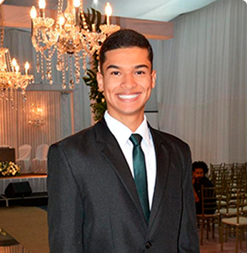
Thulio Aleixo Bezerra
Graduando em Sistema de Informação
-
Gilmar Gonçalves
Pós-doutorando especialista no desenvolvimento de hardware
-
Barbara de Queiroz
Pesquisadora DotLab Brazil
-
Maria Eduarda Ferro
Pesquisadora DotLab Brazil
-
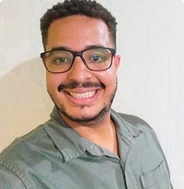
Hebert Humberto
Graduando em Enfermagem - FENSG/UPE
-
João Victor Medeiros
Graduando em Sistema de Informação
-
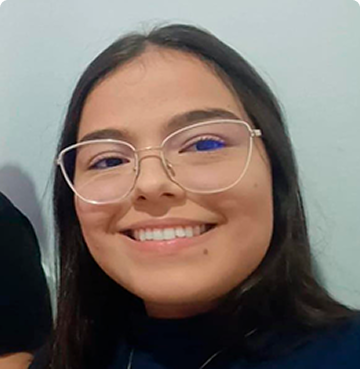
Camila Jullyane
Graduanda em Sistemas de Informação
-
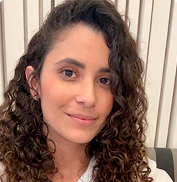
Aymée Medeiros
Coordenadora de Pesquisas na Fundação NHR Brasil, Pesquisadora convidada do dotLAB Brazil